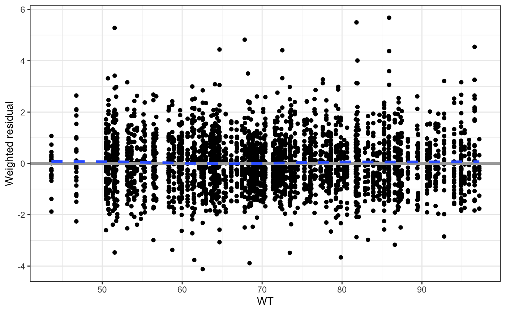
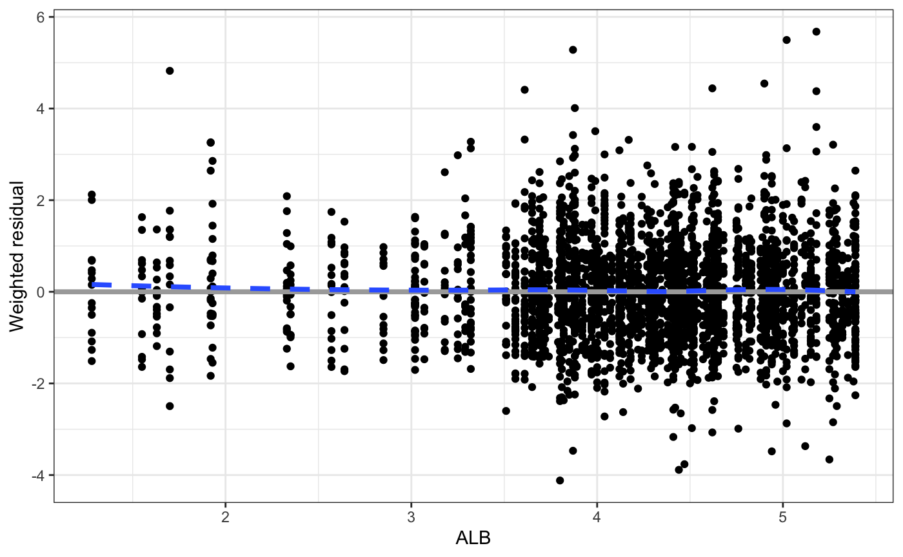
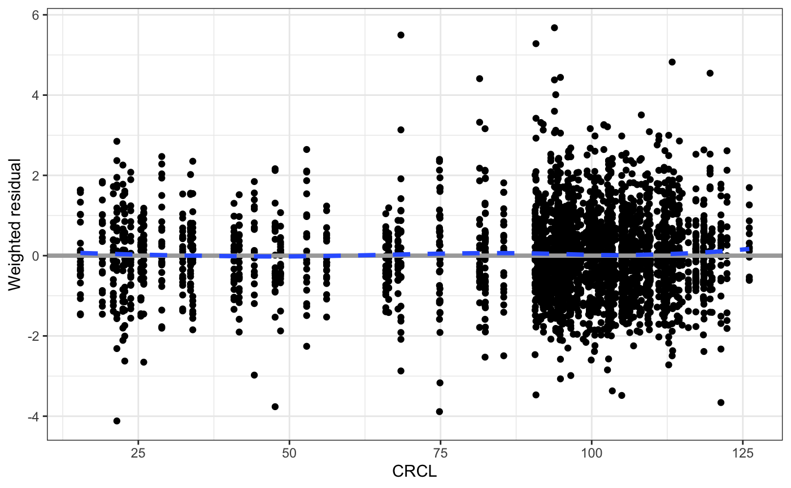
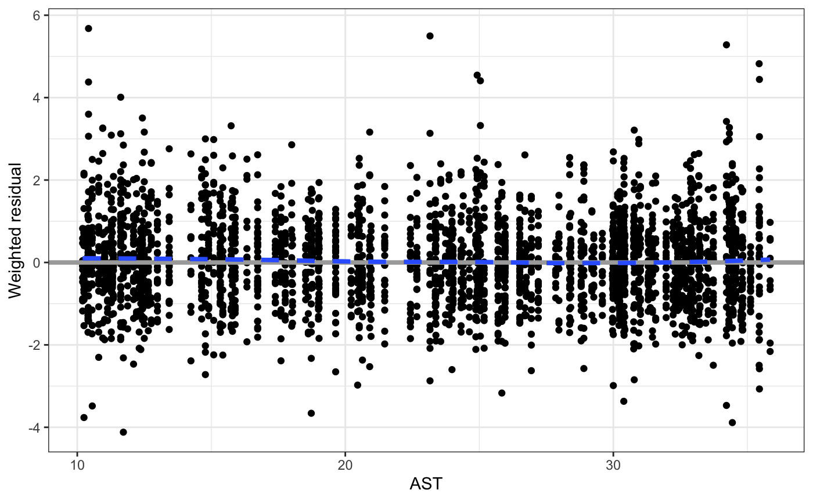
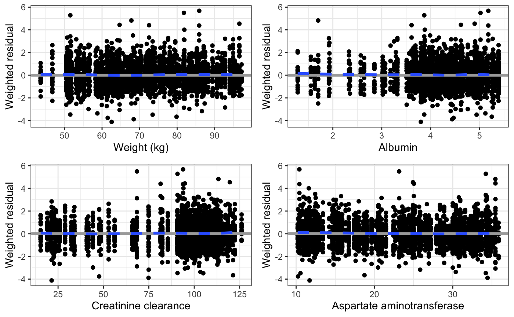
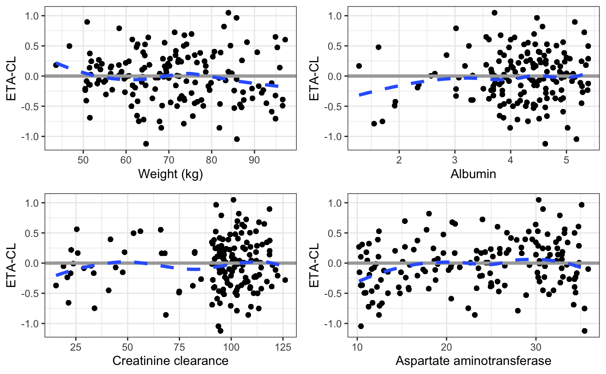
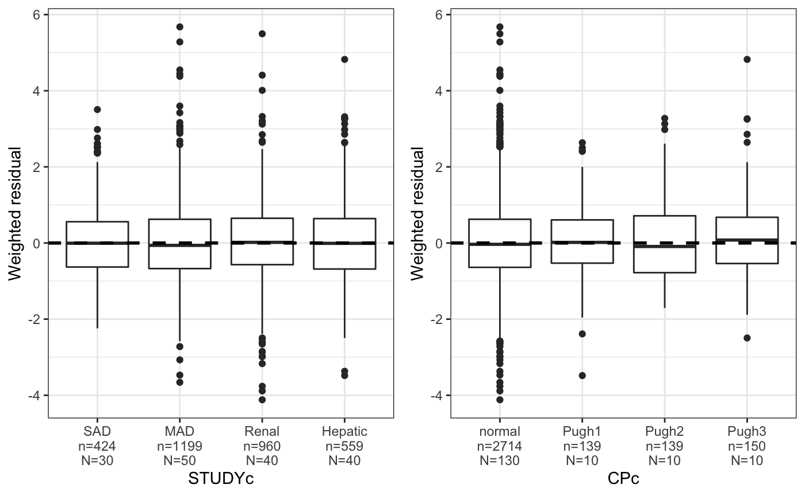
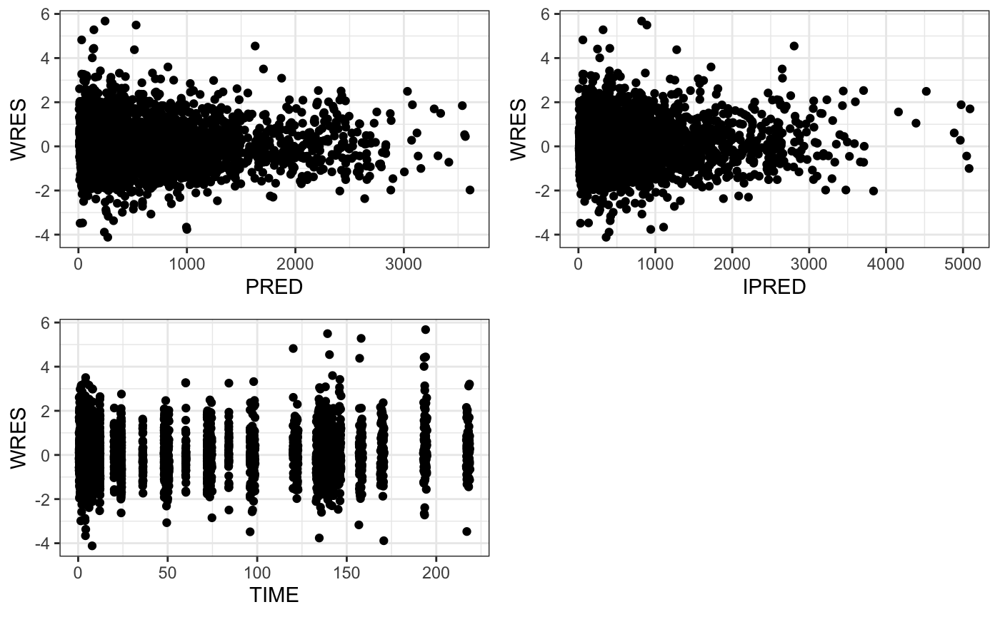
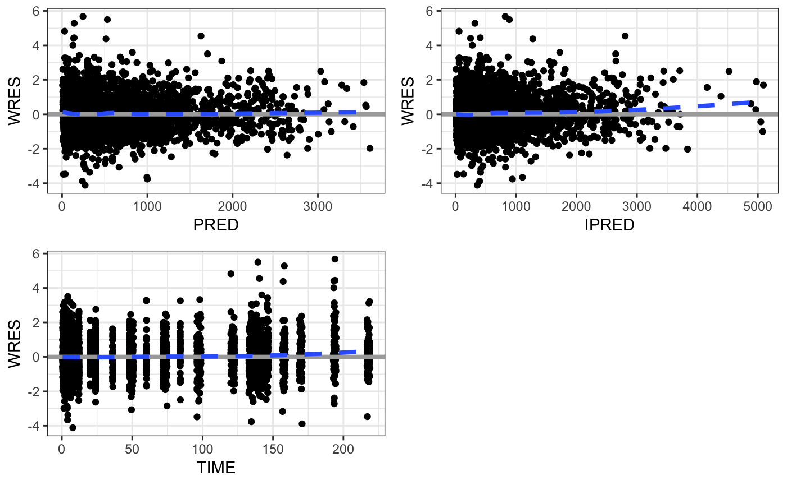

Vectorized Plots
Kyle Baron
2020-06-30
list_plots.RmdSet up
library(pmplots) library(dplyr) data <- pmplots_data_obs()
Vectorized plots
Some pmplots functions have been vectorized so that you can pass in a vector of inputs and get a list of plots back. This is a convenience feature that allows you to quickly make several plots. The intended use is to arrange those plots in a single page or multiple pages for display.
For example, we can plot WRES versus WT
wres_cont(data, x = "WT")
## `geom_smooth()` using formula 'y ~ x'
If we wanted to vectorize this plot and look at WRES versus WT, ALB, CRCL, and AST we would write
## [[1]]## `geom_smooth()` using formula 'y ~ x'
##
## [[2]]## `geom_smooth()` using formula 'y ~ x'
##
## [[3]]## `geom_smooth()` using formula 'y ~ x'
##
## [[4]]## `geom_smooth()` using formula 'y ~ x'
And we get a list of plots back. This list can be arranged on the fly with
covs <- c( "WT//Weight (kg)", "ALB//Albumin", "CRCL//Creatinine clearance", "AST//Aspartate aminotransferase" ) wres_cont(data, x = covs) %>% pm_grid()
## Loading required namespace: cowplot## `geom_smooth()` using formula 'y ~ x'
## `geom_smooth()` using formula 'y ~ x'
## `geom_smooth()` using formula 'y ~ x'
## `geom_smooth()` using formula 'y ~ x'
In this example, we also made the vector of inputs full col_label specification.
Another example are the eta_cont plots
id <- pmplots_data_id() eta_cont(data, x = covs, y = "ETA1//ETA-CL") %>% pm_grid()
## `geom_smooth()` using formula 'y ~ x'
## `geom_smooth()` using formula 'y ~ x'
## `geom_smooth()` using formula 'y ~ x'
## `geom_smooth()` using formula 'y ~ x'
What plots are vectorized?
Basically any plot where the user is required to identify the column for plotting. So in the example, wres_cont asks the user to specify what the continuous variable is for the x-axis. This plot is vectorized. Same with wres_cat

In contrast, dv_pred is hard-wired to look for DV and PRED. It is designed to look for only one thing on each axis. This plot is not vectorized.
You can use pm_scatter_list as a vectorized function to vectorize anyting. So this allows us to do
pm_scatter_list(data, y = "WRES", x = c("PRED", "IPRED", "TIME")) %>% pm_grid()

Or just use lapply or purrr::map
## `geom_smooth()` using formula 'y ~ x'
## `geom_smooth()` using formula 'y ~ x'
## `geom_smooth()` using formula 'y ~ x'
Please see the help topic for each function to know if that function is vectorized or not.